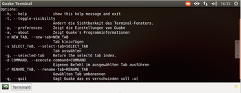

Guake
Dieser Artikel wurde für die folgenden Ubuntu-Versionen getestet:
Ubuntu 14.04 Trusty Tahr
Zum Verständnis dieses Artikels sind folgende Seiten hilfreich:
Guake  (in Anlehnung an Quake) ist ein auf Python basierender Terminal-Emulator. Guake verhält sich wie das Terminal bei Quake: Durch einen bestimmten Tastendruck (Hotkey
F12 ) rollt sich das Fenster vom oberen Bildschirmrand herunter und wieder ein, wenn dieselbe Taste nochmals gedrückt wird. Des Weiteren werden Reiter (Tabs) unterstützt, das Ändern der Größe (hier Höhe), die Transparenz des Fensters und vieles andere mehr.
(in Anlehnung an Quake) ist ein auf Python basierender Terminal-Emulator. Guake verhält sich wie das Terminal bei Quake: Durch einen bestimmten Tastendruck (Hotkey
F12 ) rollt sich das Fenster vom oberen Bildschirmrand herunter und wieder ein, wenn dieselbe Taste nochmals gedrückt wird. Des Weiteren werden Reiter (Tabs) unterstützt, das Ändern der Größe (hier Höhe), die Transparenz des Fensters und vieles andere mehr.
Das gleiche Prinzip findet auch bei Kuake (veraltet) und bei Tilda Anwendung. Für KDE kann alternativ Yakuake benutzt werden.
Installation¶
 Guake ist in den offiziellen Paketquellen enthalten. Folgendes Paket muss installiert werden [1]:
guake (universe)
 mit apturl
mit apturl
Paketliste zum Kopieren:
sudo apt-get install guake
sudo aptitude install guake
Benutzung¶
Nach der Installation findet man die Anwendung bei Ubuntu-Varianten mit einem Anwendungsmenü unter "Zubehör -> Guake Terminal" oder "System -> Guake Terminal" [3]. Bei regelmäßiger Nutzung empfiehlt es sich, den automatischen Start zu aktivieren.
Nach dem Start wird im Benachrichtigungsfeld (Systray) ein Symbol für Guake angezeigt, über welches das Programm mit Linksklick  aufgerufen werden kann. Ein Rechtsklick
aufgerufen werden kann. Ein Rechtsklick  führt zu den Einstellungen.
führt zu den Einstellungen.
Einstellungen¶
Im Einstellungsfenster gibt es fünf Reiter:
| Einstellungen | |
| Reiter | Funktionen |
| "Allgemein" | Festlegung der Shell, Festlegung der Fenstergröße, Trayicon |
| "Bildlauf" | Scrollbalken, Zurückscrollbare Zeilen |
| "Aussehen" | Schriftart, Farbe, Hintergrundfarbe/bild, Transparenz |
| "Tastenkürzel" | Belegung von Tastenkombinationen und deren Funktion |
| "Kompatibilität" | Tastatur-Einstellungen |
Als Standardterminal festlegen¶
Wem Guake so gut gefällt, dass man es als Standardterminal einrichten möchte, kann das über das Alternativen-System [3] konfigurieren:
sudo update-alternatives --config x-terminal-emulator
Ist Guake nicht in der zur Auswahl angebotenen Liste enthalten, muss man zuerst das Alternativen-System anpassen:
sudo update-alternatives --install /usr/bin/x-terminal-emulator x-terminal-emulator /usr/bin/guake 30
und wiederholt dann die Konfiguration des Alternativen-Systems.
Tastenkombinationen¶
Als Voreinstellung sind folgende Tastenkombinationen festgelegt:
| Tastenkombinationen | |
| Tastaturbefehl | Funktion |
| F12 | Guake ausrollen/einrollen |
| ⇧ + Strg + T | Neuer Tab |
| ⇧ + Strg + W | Tab schließen |
| Strg + Bild ↑ | Vorheriger Tab |
| Strg + Bild ↓ | Nächster Tab |
| F2 | aktuellen Tab umbenennen |
| ⇧ + Strg + C | Text in die Zwischenablage kopieren |
| ⇧ + Strg + V | Text aus Zwischenablage einfügen |
| ⇧ + Strg + Q | Beenden |
| F11 | Vollbild an/aus |
Problembehebung¶
Fehlender Rollbalken bei Unity¶
Unter Unity wird die rechte Rollbalken (scrollbar) des Guake-Fensters nicht dargestellt, weil das Unity-Startmenü das Fenster von Guake soweit nach rechts verschiebt, das der Rollbalken außerhalb des Sichtbereichs liegt. Das lässt sich abstellen, in dem durch Aktivieren der Autohide-Funktion dafür gesorgt wird, dass das Unity-Startmenü automatisch ausgeblendet wird. Dann kann mit F12 Guake eingeblendet werden und der Rollbalken ist wieder sichtbar.
Weitere Abhilfe verspricht ein Bearbeiten des Python-Quellcodes, der im Wesentlichen in Guake terminal showing up wrong in Unity beschrieben wird. Im Einzelnen sei es nochmals dargestellt:
Sicherungskopie von /usr/lib/guake/guake.py erstellen:
sudo cp /usr/lib/guake/guake.py /usr/lib/guake/guake.py.original
. Ab Ubuntu 12.10 sichert und bearbeitet man stattdessen /usr/bin/guake.
Die Datei /usr/lib/guake/guake.py mit Root-Rechten editieren. In Zeile 817 (unter Ubuntu 11.04, gegebenenfalls anpassen)
width = 100auf z.B.width=96ändern:screen = self.window.get_screen() height = self.client.get_int(KEY('/general/window_height')) width = 100 # Breite in Prozent halignment = self.client.get_int(KEY('/general/window_halignment'))abspeichern und Guake neu starten.
Der rechte Rollbalken ist nun sichtbar.
Wird Guake aktualisiert, muss das Bearbeiten der Datei wiederholt werden.
 Übersichtsartikel
Übersichtsartikel- Erstellt mit Inyoka
-
 2004 – 2017 ubuntuusers.de • Einige Rechte vorbehalten
2004 – 2017 ubuntuusers.de • Einige Rechte vorbehalten
Lizenz • Kontakt • Datenschutz • Impressum • Serverstatus -
Serverhousing gespendet von